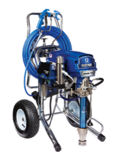
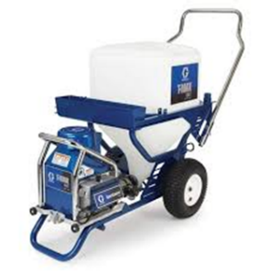

Механизированное нанесение Danogips ProSpray
Механизированное нанесение возможно с применением различных средств механизации, независимо от принципа работы, конструкции и предельного уровня давления.
Распространенные средства механизации:
Аппараты безвоздушного нанесения;
Аппараты шнекового типа;
Текстурный пистолет и хоппер/ковш с компрессором.
Для нанесения шпатлёвки Danogips ProSpray рационально использовать аппараты безвоздушного нанесения.

Graco серии Mark и аналоги

Graco серии T-Max и аналоги

Graco серии APX и аналоги

Graco серии Duty Max и аналоги
Производительность:
Основным параметром, определяющим возможность работы аппарата со шпатлёвкой, считается его производительность, измеряемая в л/мин.
Для нанесения шпатлёвки используются аппараты с производительностью от 4,3 л/мин и выше.
Шланги:
Для нормальной работы аппарата важно использовать шланги большого сечения. Минимальный диаметр шланга 3/8 дюйма, оптимально ½ дюйма, либо большее сечение, предусмотренное конструкцией аппарата.
Использование узкого окрасочного шланга, например, ¼ дюйма, на вязком материале повлечёт падение давления на сопле, при сохранении высокого давления в насосе. Материал просто не будет успевать проходить через тонкий шланг, а факел на сопле будет неравномерным или пульсировать.
Также давление на выпуске может падать при:
- Использовании нескольких шлангов подряд
- Установке тонкого гибкого поводка
- Большом количестве сочленений шланга и добавлении в тракт различных переходников
- Перегибах шланга
Пистолеты:
Для нанесения Danogips ProSpray используйте пистолеты типа Heavy-Duty Blue, а также Heavy-Duty Inline c аппаратами серии Mark/APX/DutyMax и аналогами. Для серии T-Max и аналогов используйте распылители типа T-Maх Lance.
Несмотря на то, что окрасочный пистолет при удалении фильтра способен пропускать шпатлёвку, следует использовать специально предназначенные пистолеты, рассчитанные на нанесение более вязких и крупнофракционных материалов, чем краска.
Сопла:
Безвоздушные аппараты обычно используют маркировку, содержащую информацию о проходном отверстии сопла и параметр угла раскрытия факела.
Рассмотрим маркировку на примерах:
«531»
Последние две цифры «31» - проходное отверстие = 0,031 дюйма.
Первая цифра «5» - угол раскрытия факела = 50°(5х10°).
Если угол раскрытия больше 100°, то сопло имеет четырёхзначный индекс:
«1239»
Проходное отверстие = 0,039 дюйма.
Угол раскрытия факела = 120°(12х10°).
Используйте для Danogips ProSpray сопла с удобным углом раскрытия от 30 до 120° и проходным отверстием не менее 0,027 дюйма.
Рекомендуемые сопла:
Для аппаратов серии Graco Mark и аналогов: *29, *31.
Для аппаратов серии Graco T-Max и аналогов сопла: *39, *41.
Максимальный размер сопла ограничен производительностью аппарата. Аппараты производительностью 4-6 л/мин позволяют использовать сопло с отверстием до 0,037 дюйма. 7-8 л/мин до 0,051 дюйма.